Chapter 8 Priority Sectors
8.1 Agriculture and Livestock
- Objective: Increase the resilience of agriculture and livestock
8.1.1 Context
Agriculture in Mozambique is the basis for development, constituting the most important source of income and subsistence for more than 80% of the population and with an average share of GDP above 20% of the total (INE: National Accounts, 2008 – 2018 ). The agriculture sector also plays an essential role for women’s livelihoods, as 90% of the economically active female population earns a living from agriculture. Furthermore, women constitute 61% of the agricultural workforce. The country’s agricultural potential is estimated at 62% of the total area, but only 7% of the area is currently cultivated (CIAT; World Bank. 2017). Of the 3 million hectares of land with potential for irrigated agriculture, only 118,000 hectares were equipped for irrigation in 2015 and only 62,000 ha (52%) were being used for irrigated agriculture (CIAT; World Bank. 2017). The country’s National Development strategy (2015-2035), the Green Economy Action Plan (2013-2030), the National Climate Change Adaptation and Mitigation Strategy (2013-2025), identify the agriculture sector as essential for poverty reduction and to stimulate economic growth, as well as the one with the greatest potential for adaptation and emission reduction through the promotion of resilient production techniques and systems.
The staple food production is dominated by cereals such as maize, sorghum, millet and rice. Rice production has shown great expression in recent years with the expansion of national production on a commercial scale. Regarding cash crops, cotton, sugar cane and tobacco are the most expressive crops both in terms of area covered and production volume. Rice production is carried out in irrigated areas and flood plains. Rice constitutes the third most important crop in the group of cereals, having increased the cultivated area from 200,000 hectares in 2006 to 300,000 hectares in 2012, although the national potential is about 900,000 hectares.
Agriculture in Mozambique is mainly dominated by the family sector whose production is subsistence-oriented, rainfed, and highly vulnerable to climate variability. In terms of farm size, approximately 72% of the country’s farmers work on plots of land that do not exceed 2ha, using limited amounts of inputs and practicing extensive slash and burn (CIAT; World Bank. 2017). Livestock production and savannah burning represent two main sources of greenhouse gas (GHG) emissions in the agriculture sector.
Livestock production is a relevant activity in the agricultural sector. Animal husbandry is a component of diversification of peasants’ livelihoods, constitutes a source of income and an economic reserve, contributes to the balance of production systems, to increase agricultural production, with animal traction and manure, and for the food security of families, playing a social role in rural communities. Livestock production is mainly carried out by the family sector for subsistence (mainly small animals such as goats, rabbits, chickens, ducks), but large-scale production has been increasing in recent years, mainly cattle (cattle, pigs, goats and sheep) and broilers and egg production.
Although agriculture is the economic base of the majority of the country’s population, it is constrained by low soil productivity; biotic and abiotic factors such as high pest, disease and weed pressure, and irregularity and scarcity of rainfall, respectively; low use of inputs (fertilizers, pesticides and improved seed); and the low level of use of appropriate technologies. Other factors that also contribute to low productivity include poor agronomic practices and insufficient extension services due to low geographical coverage. Vulnerability to Climate Change and Disasters
(Source: Second National Communication Draft, p. 17-18. Translated from Portuguese)
8.1.2 Vulnerability to Climate Change and Disasters
Agriculture is considered to be the basis for Mozambique’s development. This sector is made up of small, medium and large producers. The most predominant class is smallholders who use approximately 97% of the approximately five million arable land currently used for agriculture (Mozambique Government - PAPA, 2008).
In 2010, agriculture contributed 23% to the Gross Domestic Product (INE). Furthermore, 80% of the country’s active population is employed in the agrarian sector. Thus, this sector is fundamental for poverty reduction and income generation for rural families, since most of this population depends on agriculture for food, employment and income.
A critical factor in agricultural production is access to and distribution of water throughout the vegetative cycle of crops. Production and productivity levels are affected by changes in climatic parameters, in particular variations in rainfall, given that around 98% of farmers practice rainfed agriculture (CAP, 1999-2000).
According to the rainy season balance sheets, the agriculture sector is vulnerable to drought and drought events, floods and inundations, strong winds, tropical cyclones including pests (see Table 3.3). These events result in crop areas affected and/or lost; death and/or disappearance of domestic animals, especially cattle, goats, pigs, sheep and poultry; destruction of agricultural and animal management infrastructures; loss of pasture areas, affecting farmers and their families.
Table 3.3: Impact of climate change on agriculture
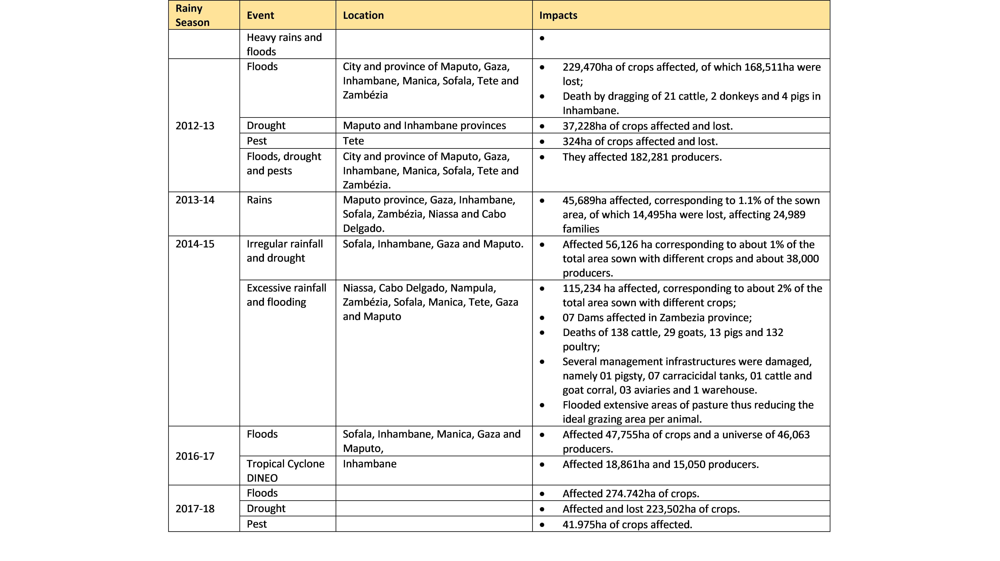
Source: Balances of the rainy seasons for the period 2011-12 to 2017-18
Weather events in the country between the rainy seasons from 2011-12 to 2017-18 affected around 1,384,677 ha of crops, of which around 733,270 ha were lost. The events that affected the largest area of crops were the tropical depression Dando and the tropical cyclone Funso, which occurred in the 2011-12 rainy season, while the greatest loss of crops occurred following the floods of 2012-2013.
The events that cause most loss and destruction in the agricultural sector are those related to excessive rainfall and floods and tropical cyclones. However, when a drought occurs, usually the area affected equals the area lost.
It is also important to stress that in addition to the biophysical vulnerability associated with the occurrence of extreme weather events, the levels of technology adopted by most producers do not correspond to the requirements of the selected varieties, due to the weak financial capacity to purchase agricultural inputs, which also contributes to low production and productivity.
Livestock plays a vital role for the rural population, it is one of the components of agriculture. The contribution of livestock to the national economy is incipient. In 2008, livestock represented 10% of total agricultural production and contributed only 1.7% to the Gross Domestic Product (OIE Report, 2008). However, animal production is affected by climate change in food quantity and quality, disease distribution, management practices and production systems (Herrero et al. 2009).
The main constraints to the development of livestock production are as follows:
Low productivity of existing herds due to the genetic quality of breeding stock and inadequate management practices;
Weak veterinary assistance network for the family sector;
Lack of infrastructure for watering and managing livestock.
PEDSA identifies drought as one of the environmental factors causing a notable loss of productivity and the use of technologies to improve water availability and management as a key element to improve livestock production. For example, in 2015, 6,767 cattle and 112 goats died nationwide due to drought.
In semi-arid regions, livestock production is a way for farmers to adapt to climate change, as animals are relatively less affected. However, several aspects of livestock production are affected by climate change, including feed quantity and quality, disease distribution, management practices and production systems (Herrero et al. 2009). Therefore, to achieve the above Government objectives, investment is needed to address any constraints to livestock productivity, including climate change.
The vulnerability and adaptation of pastures and livestock are matters of great concern in developing countries such as Mozambique, due to the great importance of livestock as a livelihood component and source of income for local communities. The objectives of this sub-chapter are:
Assess the expected impacts and vulnerability of pasture and livestock to climate change;
Identify adaptation programmes and measures;
Identify gaps, needs and priorities for climate change education, training and public awareness.
It should be noted that the impacts of extreme climate events on livestock are already a reality in the country, as illustrated in Table 3.4. The observed impacts range from the loss of animals through death to the destruction of livestock management infrastructures, including the loss of pasture areas.
Table 3.4: Impacts of extreme events on livestock
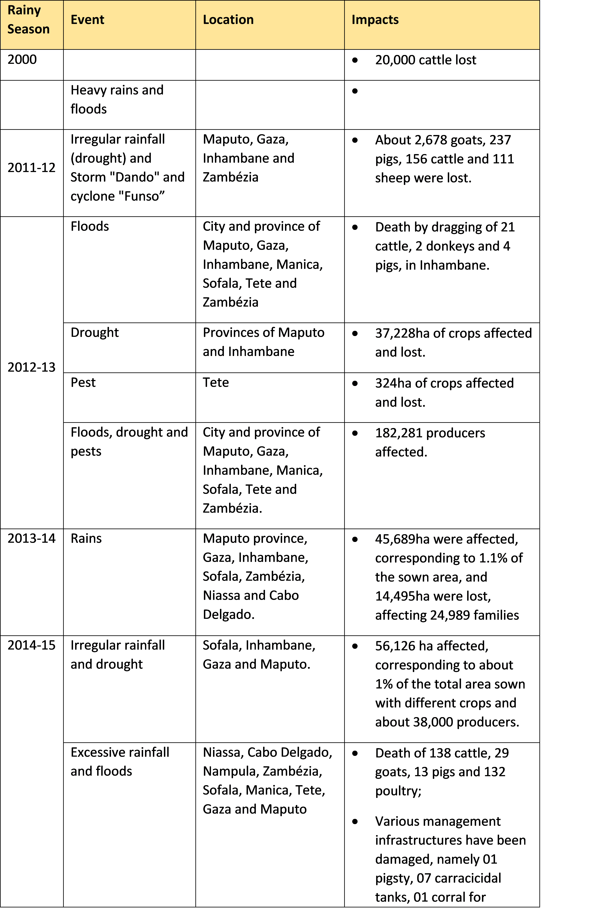
(Source: Second National Communication Draft, p. 137-139; 144-146. Translated from Portuguese)
8.1.3 Actions
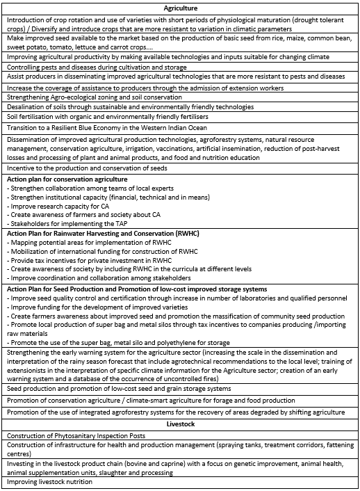
(Source: NAP Prototype, 25.09.2021, Climate Change Adaptation Assessment)
8.2 Fishery
- Objective: Increase the resilience of fisheries
8.2.1 Context
The Mozambican coastline has an extension of about 2,700 km, and several fishing resources can be identified. According to the Fisheries Master Plan (2010-2019), it is estimated that the potential of fishery products in Mozambique is around 332,000 tonnes, the main resources being shallow water shrimp (in the Sofala Bank and in the Maputo Bay), deep-sea crustaceans (in the continental slope of the central and southern zone), horse mackerel and mackerel (in the Sofala Bank) and demersal fish (in the southern and northern zone).
It is estimated that the fishing sector contributes about 4% to GDP (MIMAIP, 2016) through the export of shrimp, prawns and other fishery products, with a global production of about 151,000 tons per year from fishing marine and inland waters (Ministerial Diploma No. 161/2014 of 1 October). Fisheries contribute to food security and especially by providing about 50% of the animal protein consumed in the country (MIMAIP, 2016). Therefore, a breakdown in fisheries-based ecosystems and resources will have severe socio-economic implications.
(Source: Second National Communication Draft, p. 19. Translated from Portuguese)
8.2.2 Vulnerability to Climate Change and Disasters
The fishing sector represents about 3% of the country’s GDP, resulting from the export of shrimp, prawns and other fishery products. On the other hand, fishing resources are the source of subsistence and income for around 60% of the Mozambican population living in coastal areas. However, the IPCC (2007) indicates that coastal regions are the ones that will suffer the most from the impacts of climate change. For these reasons, it is important to determine the vulnerability of fisheries resources to climate change and identify adaptation mechanisms in order to achieve the sustainability objectives of the fishing activity.
Climate change risks to marine and fisheries resources include increases in temperature, precipitation and sea level, coastal storms and acidification of estuaries. This could decrease fish stocks, alter markets and influence tourism in the marine environment.
(Source: Second National Communication Draft, p. 19; 162. Translated from Portuguese)
8.2.3 Actions
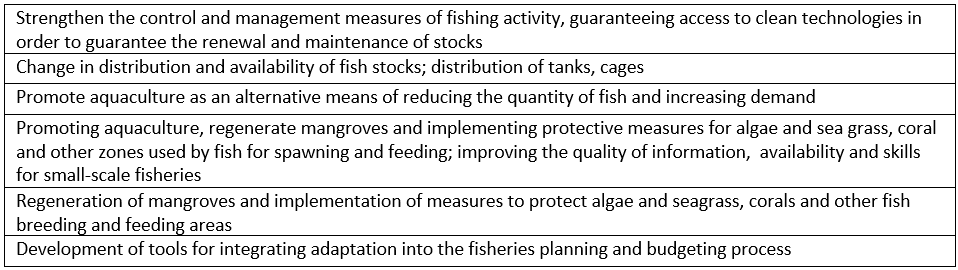
(Source: NAP Prototype, 25.09.2021, Climate Change Adaptation Assessment)
8.3 Food Security and Nutrition
- Objective: Guarantee adequate levels of food security and nutrition
8.3.1 Context
Food insecurity and chronic malnutrition are among the greatest development challenges for Mozambique. Chronic malnutrition affects 43% of children under the age of five. In 2015, there were 2.1 million (out of 4.8 million) [7] children with chronic malnutrition. This situation is especially critical in children aged one to five years, 47% of whom had short stature for their age (chronically malnourished) and 6.1% suffered from marasmus (acute malnutrition). In addition, more than half of women (51%) of reproductive age are anemic.
In Mozambique, malnutrition rates increase progressively from south to north. Chronic malnutrition is over 50% in the north, in Nampula and Cabo Delgado provinces, while it is less than 30% in Maputo and Gaza provinces.
At the same time, 7.8% of children under five years old are overweight. The prevalence of overweight/obesity in women of reproductive age (BMI>25kg/m²) is 16.4%. This situation is especially worrying in urban areas, where this prevalence is 27%, while in rural areas it is 10.5%. Obesity (BMI>30kg/m²) affects 4.2% of women of reproductive age (15-49 years), and its incidence is higher in urban families, reaching 8.9% of these, and lower in rural areas, with prevalence of 1.6%.
The 2016 study, Cost of Hunger in Africa, reveals that in 2015, malnutrition cost Mozambique almost 11% of its Gross Domestic Product (GDP) - the equivalent of US$1.7 billion. The loss of potential productivity as a result of malnutrition-related mortality, morbidity and reduced cognitive development accounts for much of this cost. It is estimated that between 2011 and 2015 alone, 211,611 child deaths are directly associated with malnutrition, representing 25.6% of child mortality.
(Source: Nutritionally Smart Agriculture in Mozambique, p. 02-03. Translated from Portuguese)
The effects of food insecurity are even more severe when many families in the country are weakened by diseases such as HIV/AIDS and malaria. These families lack labor at crucial moments of agricultural activity, such as sowing, weeding and harvesting, with an adverse impact on the cultivated area and yields. These families are also victims of malnutrition. Nutritional status is also low, and the lack of production for sale means lack of availability of money for health care. Low agricultural yields coupled with low levels of use of modern inputs such as fertilizers, improved seeds, and lack of proper water management also contribute to chronic food insecurity. The presence of poor rural roads means that an effective response to food shortages by traders in other areas is difficult.
The above situation is reflected in the current situation of chronic malnutrition whose main immediate causes in Mozambique are inadequate nutrient intake, high levels of infection and early pregnancy. Diets are monotonous, with micronutrient deficiencies, affecting the majority of the population. Malaria and gastrointestinal parasites affect half the population. The same proportion among women is attended in prenatal consultations for having sexually transmitted diseases, in addition to half of them being pregnant as children. Only 40 percent of children under six months are exclusively breastfed. Underlying causes of chronic malnutrition are food insecurity (especially in limited access to and use of nutritious food), poverty and inadequate practices in relation to caring for adolescent girls, mothers and children, as well as insufficient access to health, water and to sanitation services. The basic causes of chronic malnutrition, in addition to poverty, include the low level of general and nutritional education, and gender inequality (the latter responsible for early marriages and pregnancies).
(Source: National Investment Plan of the Agricultural Sector - PNISA 2013-2017, p. 16-17. Translated from Portuguese)
8.3.2 Vulnerability to Climate Change and Disasters
Mozambique is a country prone to climate impacts that further compromise food and nutrition security in some areas. Mozambique ranks third among African countries most exposed to various climate-related risks, suffering from cyclones, periodic droughts and floods, and related epidemics. For example, due to Cyclone Idai, which hit the country in March 2019, hundreds of rural communities suffered from food shortages and plunged into a nutritional crisis. Six weeks later, Cyclone Kenneth arrived in northern Mozambique.
(Source: Nutritionally Smart Agriculture in Mozambique, p.03. Translated from Portuguese)
Part of the food insecurity in Mozambique results from sporadic food shortages caused by disasters. One of the largest disasters occurred in 2000 with dramatic effects on the food security situation. Torrential rains and cyclones systematically provoked flooding with the most serious effects for the provinces of Maputo, Gaza, Inhambane, Sofala and Manica causing devastation. In addition to people being displaced, and extensive material damage to public infrastructure such as schools, hospitals, water and electricity supply systems, road, rail and telecommunications networks, damages include crop losses, particularly food and livestock. Flood periods are followed by years of drought that affect a significant proportion of crops, leading many families to face severe food deficits.
However, in order to address the impact of natural disasters on food security, it is of utmost importance to ensure that the investments to be made and changes to be made in food production do not compromise the food and nutrition security of vulnerable groups and the progressive realisation of the human right to adequate food.
(Source: National Investment Plan of the Agricultural Sector - PNISA 2013-2017, p. 16. Translated from Portuguese)
8.3.3 Actions
8.4 Water Resources
- Objectives:
- Increase capacity to manage water resources in critical basins of the country
- Increase access and capacity to capture, store, treat and distribute water in major settlements/farming areas
8.4.1 Context
Mozambique is located in the eastern part of Southern Africa, has a total area of approximately 801,590 km2 and 2,700 km of coastline. According to INE, the population is projected to be 25.53 million in 2015, of which 68% live in rural areas and 32% in urban areas. The country is administratively divided into 11 provinces (Niassa, Cabo- Delgado, Nampula, Zambézia, Tete, Manica, Sofala, Inhambane, Gaza, Maputo-Province and Maputo-City. In terms of operational water resources management Mozambique has 5 Regional Water Administrations, namely: Northern, Central-North, Zambezi, Central and Southern (figure 1).
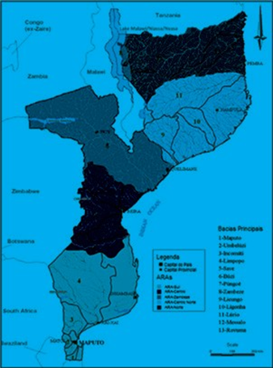
Figure 1: Division of Mozambique by Hydrographic Regions
The situation of water resources and their management in Mozambique can be defined as being at an intermediate stage of implementation of the sector reforms initiated at the beginning of the 1990s with the approval of Law No. 16/91 of 3 August 1991 approving the Water Law:
The average availability of water resources can be considered as good, with an average annual runoff of 216,500 Mm3/year for a total population total population of 25.53 million inhabitants, which translates into an average of 8,481 m3/year of average per capita, which is well above the so-called water stress levels (<1,700 m3/year). However, its unequal distribution in space and time means that there are periods of the year and geographical locations of abundance and scarcity. The Centre-North and South regions are of greater concern because they have the lowest per capita availability;
Mozambique has one of the lowest storage capacities in Africa as it has the capacity to store only 0.5% of its capacity of its average annual runoff. To make matters worse, 90% of this capacity is concentrated in the Cahora-Bassa dam which has a main purpose of energy production. The country already faces storage challenges in meeting basic needs (water supply) in some of its main urban centres, namely Lichinga, Cuamba, Pemba, Nampula, Nacala, Quelimane, Beira/ Dondo and the Maputo metropolitan region;
The water bodies face some limited water quality challenges, mostly related to pollution due to irrigation returns and urban effluents upstream in neighbouring countries (in some of the shared basins) and due to mining activities, unregulated land uses in some watercourses and saline intrusion;
Mozambique is located downstream of all basins shared with other countries, except for the the Rovuma basin. In some of these basins intensive water use is already observed in the upstream countries, especially in agriculture. The Save basin presents the most critical situation due to the combination of seasonal rainfall and intensive use of upstream resources, where irrigated agriculture and a significant part of Zimbabwean industry is concentrated. The situation is not very different in the southern basins shared with South Africa and Swaziland with highly developed irrigated agriculture. Therefore, strategic planning for water resources management must take into account these adverse factors;
Due to its geographical location, Mozambique is highly vulnerable to the negative impacts of climate change that are projected to translate into increased occurrence of extreme events such as extreme floods and droughts and the occurrence of cyclones. The 2,700 km long coastline could suffer from rising sea levels with impacts on social and economic infrastructure and degradation of water quality, soil quality and biodiversity destruction in areas potentially affected by saline intrusion;
The monitoring of water resources is not yet at the desired levels and is characterised by a network of hydro-climatological observation network that does not meet some of the coverage requirements, the data collected is, in some cases, of poor quality and the monitoring, operation and maintenance costs are beyond the financial capacities of the management institutions;
The operational management of water resources is carried out in a decentralised manner by hydrographic regions of which there are five, namely North, Central North, Zambezi, Central and South. The process of establishing the respective institutions is still in the consolidation phase in terms of technical capacities and means, including the creation of some basin units and committees to complete the governance framework (River Basin Management Units and the respective Committees);
Strategic water resources development plans exist for only a small number of river basins;
Despite some progress observed with regard to the establishment of cooperation with neighbouring countries with which Mozambique shares hydrographic basins of Rovuma, Zambeze, Púngoè, Búzi, Save, Limpopo, Incomáti, Umbeluzi and Maputo, the process is still incomplete and needs consolidation;
The implementation of development projects and financing of day-to-day water management activities water resources is still dependent on government subsidies or funding from external cooperation partners, due to the limited amount of own revenue that the sub-sector produces; and
Existing institutional capacity (material and human resources) is still limited to respond adequately to the challenges of integrated water resources management at both central and regional/local levels.
(Source: Water Sector Action Plan for the Implementation of Sustainable Development Goals 2015 – 2030, p. 1-3. Translated from Portuguese)
8.4.2 Vulnerability to Climate Change and Disasters
Mozambique is located on the East African coast at the confluence of many international rivers and has 2,700 km of coastline. The country has a tropical and subtropical climate with some semi-arid regions in the south-western part. The average temperature tends to be high along the coast and lower in the interior, with a seasonal variation that includes cold and dry periods from April to September and hot and humid periods from October to March. Precipitation also shows the same trend, occurring in the hot season (November to April) and is not evenly distributed across regions, with the north recording averages of 150-300 mm and the south 50-150 mm per month in the wet season.
Mozambique is one of the African countries most vulnerable to climate change due to its geographical location described above, its climate specificities and also the fact that a significant part of the coastline is below sea level. Although more detailed models on climate change and its impacts are not yet available, some worrying trends have already been recorded and are projected to worsen in the future. Average annual temperature is estimated to have increased by 0.6°C from 1960 to 2006 (IRISH AID, 2016 & MER, 2015), with highest increases observed in the southern region and according to various sources, the average temperature will continue to record significant increases in the future: IRISH AID (206) - from 1 to 2.8 ºC by 2060; MER (2015): up to 4.6 ºC by 2090/2100; Charles & Twena (3006) - from 1.8 to 3.2 ºC by 2075; and INGC (2009) - average of 2.5 to 3.5 ºC by 2046/65. The frequency of hot days also registered an increase and is also projected to continue with the same trend with greater impact on the northern region. As for precipitation, no significant changes have been observed to date, except for the tendency to delay the onset of the rainy season and persistence of dry days and increase in the length of the dry season in some specific areas. Substantial changes in mean rainfall are also not expected in the future, but greater variability is projected with increased rainfall in the wet season offset by its decrease in the dry season and also increased rainfall on the coast relative to the interior (INGC, 2009 & IRISH AID, 2016). The projected increase in precipitation for coastal areas is however less than the increase in evapotranspiration due to longer and more intense dry periods and reduced soil moisture.
Overall, projections suggest that the climate will become more extreme with intense droughts and floods and therefore affecting the availability of water resources in space and time impacting on the availability of water to meet basic needs, security of people and socio-economic infrastructure and food security in various forms, including:
High levels of evapotranspiration could result in increased water demand in central and southern regions, which were projected to exceed the increase in precipitation on the coast;
Reductions in rainfall in the upstream countries of the international rivers that share watercourses with Mozambique that may potentiate a reduction in the availability of border flows, particularly in Zimbabwe and Zambia;
More accelerated reduction in per capita water availability due to reductions in water resources against population growth, especially in regions of higher population concentration;
The current pattern of water use combined with the impact of climate change will most likely to put considerable pressure on the Zambezi basin and place the Limpopo basin in absolute shortage;
The most direct social impact of reductions in water resource availability is the lack of water for basic needs, lack of water for irrigation, reduced groundwater recharge and reduction of the water table in major aquifers;
Negative impact on water quality and soil degradation as a result of saline intrusion in coastal areas.
The summary of the main impacts related to climate change as well as the strategic actions in the area of water resources that will contribute to the minimization of its impacts are presented in table 7.
Table 7: Climate change and potential impacts
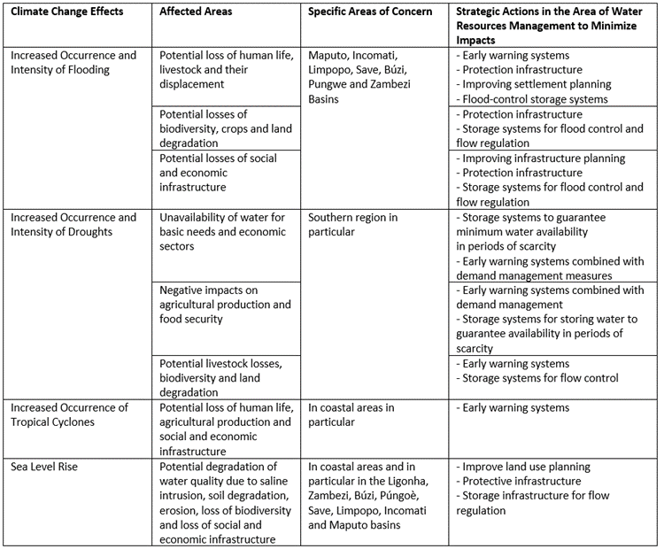
Due to its geographical location, Mozambique is vulnerable to tropical cyclones and El Nino/La Nina phenomena that have been characterized by the occurrence of cyclical floods and droughts. Vulnerability to floods and droughts is exacerbated by the lack of hydraulic infrastructure capable of ensuring mitigation and enabling the country’s resilience and adaptation to these events.
In recent years the country has frequently registered flood scenarios that have been having a negative impact on the country’s socio-economic development (loss of human lives and socio-economic infrastructures). The main factors contributing to floods in Mozambique are: intense and concentrated precipitations in a certain period of time (rainy season), runoff from neighboring countries (9 basins shared with neighboring countries, almost all located upstream), watercourses crossing plains, human occupation of inundation and flood prone areas and the insufficiency of hydraulic infrastructures for flood mitigation. There are 10 flood prone basins, most of them being transboundary, and the most critical being the Zambezi and Limpopo, as shown in table 8, regarding the record of occurrence of critical floods in recent years.
Table 8: Historical flood records 1977 – 2015
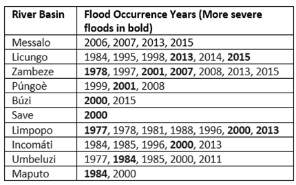
Southern Mozambique, and particularly the provinces of Inhambane, Gaza and the northern part of Maputo province and the Central region with incidence on Tete province and southern Manica and Sofala provinces, present the highest vulnerability to droughts. The most severe droughts in recent years were registered in the years 1984/85, 1997/98 and 2015/2016 resulting in a negative impact on agricultural and livestock production and placing a considerable part of the population in a situation of extreme food insecurity.
Forecasts of the impacts of climate change available point to the worsening of droughts in the country and, above all, in the provinces of the southern region of the country.
(Source: Water Sector Action Plan for the Implementation of Sustainable Development Goals 2015 – 2030, p. 8-11. Translated from Portuguese)
8.4.3 Actions
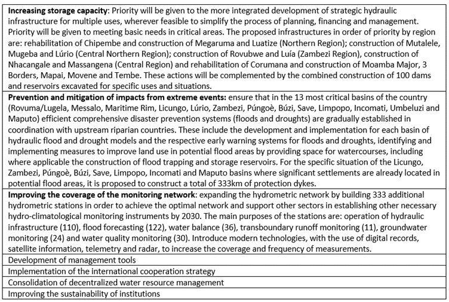
(Source: Water Sector Action Plan for the Implementation of Sustainable Development Goals 2015 – 2030, p. 4. Translated from Portuguese)
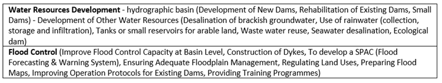
(Source: National Water Resources Plan, p. 4-5;. Translated from Portuguese)
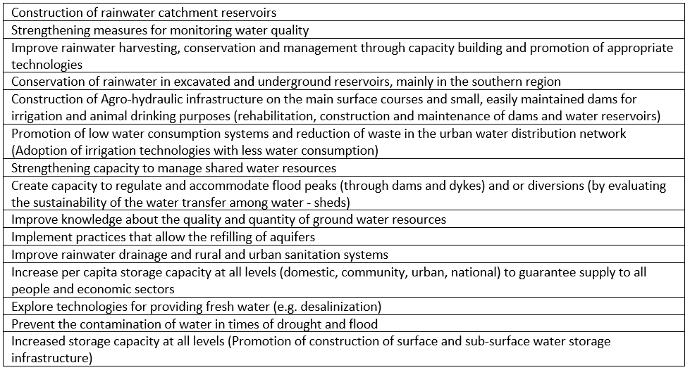
(Source: NAP Prototype, 25.09.2021, Climate Change Adaptation Assessment)
8.5 Health
- Objectives:
- Increase the resilience of health systems
- Reduce vulnerability to CC-related vector-borne diseases
8.5.1 Context
In Mozambique, health status indicators have progressed, but at different rates: Life expectancy at birth, although increasing from 42.3 in 1997 to 53.1 years in 2013 (INE), is still low compared to average African (55), denoting dissatisfaction of many basic human needs, such as adequate nutrition, clean water and sanitation, health services, etc.
Current data from Mozambique shows little progress in reducing maternal mortality and achieving universal access to reproductive health services. Despite the reduction registered between 1997 and 2003 (IDS - Demographic and Health Survey - 1997 and 2003), in recent years the Maternal Mortality Ratio has been stationary (IDS 11) and is still unacceptably high (408/100.000 live births). Exposure to the risk of maternal death is also high, with overall fertility rates standing at 5.9 children, slightly higher than the previous IDSs, partly due to the low use of family planning (FP) services.
Child health indicators show remarkable and consistent progress in recent years. Under-5 and infant Mortality Rates (MT) decreased by more than 100% between 1997 and 2011. However, the decrease in neonatal MT is occurring at a slower pace, requiring special attention in future strategies, having taking into account that about 81% of these deaths occur during the first week of life and 32% of them on the first day (National Study on Infant Mortality, 2009. MISAU).
Despite the slight reduction registered between 2003 and 2011, the prevalence of malnutrition in children under 5 years of age remains high. Given its direct and indirect effect on health as described below, the GRM launched in 2010 the Multisectoral Action Plan for the Reduction of Chronic Malnutrition in Mozambique 2011-2015 (2020).
The health status indicators presented above are largely influenced by the pattern of diseases and health problems. Indeed, the Burden of Disease in Mozambique is still dominated by communicable diseases, in particular HIV/AIDS, with an estimated national prevalence of 11.5% (1.4 million infected) and Malaria with 3.2 million reported cases in 2012, which combined account for more than half of the deaths (27% and 29% respectively) in the general population. Diarrhoea, Respiratory Infections and Tuberculosis also contribute considerably to this profile. Under-five mortality shows the same pattern, but neonatal deaths, which contribute about 16% of under-five deaths, are caused mainly by Prematurity (35%), Asphyxia (24%) and Neonatal Sepsis (17%). It is also estimated that 30% of under-five deaths have malnutrition as the underlying cause. Women of childbearing age, in addition to these common problems, face the additional burden of maternal deaths resulting from complications of pregnancy and childbirth: data from the National Neonatal and Maternal Health Needs Assessment (ANN-2007/2008) highlights uterine rupture (29%), obstetric haemorrhage (24%), puerperal sepsis (17%) and postabortion complications as the main direct causes of maternal death, while the most frequent indirect causes include HIV/AIDS (54%) and malaria (40%). Moderate anaemia is also frequent among women aged 15-49 years (14% in 2011).
The persistent occurrence of epidemic outbreaks adds to the burden of communicable diseases. There have been outbreaks of Cholera, between 2008 and 2010 (peak in 2009, with more than 19,000 cases), Measles, in 2010 (about 3,500 cases) and Meningitis, whose frequency and severity reflect a still limited responsiveness of the sector to these events. Other high incidence diseases are dysentery and other diarrhea.
Although the Neglected Tropical Diseases (NTDs) existing in Mozambique are not a direct cause of death, the high prevalence of trachoma, intestinal parasitosis (53%), billiardsiasis (47%), lymphatic filariasis (13%), onchocerciasis, etc. in the country, which cause disabilities, delay the physical and mental development of children, and their correlation with anaemia and malnutrition, etc, contribute significantly to increase the burden of disease, especially on schoolchildren, in addition to the social stigma and limitation of productivity of people affected by these diseases, aggravating the correlation between disease and poverty.
Noncommunicable diseases (NCDs) are considered to be responsible for 80% of all deaths and 60% of all causes of disability occurring in developing countries, with important consequences for the consumption of health services as well as economic resources. These diseases and trauma are beginning to influence the epidemiological profile of the country and, consequently, the burden of disease and the pressure on health services. Among the NCDs, Cardiovascular Disease (CVD) is the most important cause of morbidity and mortality, the main risk factor being Arterial Hypertension (ATH). The prevalence of hypertension is estimated at 35% nationally, being higher in cities (40.6%) than in the countryside (29.8%) and increasing with age. Diabetes is also a major cause of disease and premature death and is responsible for increased risk of CVD. In Mozambique, the prevalence of diabetes in the population aged over 20 years was 3.1% in 2003, and was projected to increase to 3.6% in 2005. Similarly, cancers are increasing their expression in the causes of consultation and hospitalization in the country: for example, the number of oncology outpatient consultations at Maputo Central Hospital (HCM) has increased by more than 50% in the last 3 years, and the bed occupancy rate has exceeded 100%. Data from the Pathological Anatomy Services (APS) of HCM for the periods 1991-2008 and 2009-2010 in Maputo City show that among women the most frequent cancers are cervical cancer (31%), followed by breast cancer (10%) and Kaposi’s sarcoma (7%). Among men, Kaposi’s sarcoma (16%), prostate cancer (16%) and liver cancer (11%) are the most common. Regarding trauma, data from the HCM Intensive Care Unit indicate that, in 2012, traffic accidents were the 3rd basic cause of death (10%) and complications of trauma represented the 6th direct cause of death, in that service.
The health status and distribution of the burden of disease across the national territory (provinces and districts) and population groups are not uniform. People living in rural areas and on the outskirts of cities, who are also the poorest, as well as children and women, bear much of the brunt of the disease. The IDS 2011, e.g., states that fertility is much higher in rural areas than in urban areas (4.5 and 6.6, respectively); mortality in children under 5 years old in poor families was almost 2 times higher than that observed in richer families, in the IDS 2003; malnutrition in children is more pronounced in the northern provinces and in rural areas.
Several factors contribute to this pattern of disease, which are called, on the whole, “social determinants of health.”
Determinants of Health and Health Inequities
The health status of individuals, communities and populations is not conditioned solely by genetic and biological processes, but also by the social and economic conditions in which people live. These social determinants of health include political, socio-cultural, economic, geographical factors and the environment which influence the onset of disease and access to and use of health services. However, these factors influence regions and population groups differently, resulting in inequities in the health status of individuals, communities and populations.
The political context has an enormous influence on the health of the population, since it must create the political-legal environment conducive to the promotion and preservation of the health of citizens, in compliance with the principle of equity. In Mozambique, a legal framework favourable to health and the pursuit of equity exists: at the supra-sectoral level, the Constitution of the Republic defines the Republic of Mozambique as a State of social justice; it defines the defence and promotion of human rights as one of the fundamental objectives of the state, guarantees protection for special groups such as children, the physically disabled, the elderly; establishes the principle of gender equality, assures all citizens the right to medical and health care and promotes equality in its access; the population policy (1999) recognises the existence of imbalances and inequalities in access to resources, infrastructures and social services, highlights the principle of respect for human rights and the right to equality and equity between men and women, and recognises the need to invest in areas that respond to the needs of a predominantly young population. It presents the reduction of the Maternal Mortality Rate (MMR) and of under-five mortality as one of its fundamental objectives; the Government’s Five-Year Programmes and poverty reduction strategies place health at the top of the priorities. There are also several intersectoral policies and strategies (social action, education, agriculture, etc.) that highlight the role of health or attribute responsibilities to the sector. At the intra-sectoral level, sector policy documents and strategies emphasize GRM commitment to health promotion and preservation, as well as equity in access to and distribution of health resources and benefits. Similarly, there are policies that promote administration reforms, particularly decentralisation. In legal terms, the National Health Service (NHS) was created by law 25/91 and brings together only public institutions, namely US (Health Units), training and research institutions, laboratories, etc. Additional legislation frames the operation of the private for-profit and non-profit sector.
Economic factors are highly correlated with health outcomes: low income and low employment are unequivocally harmful to health. Despite constant economic growth in recent years, Mozambique is still among the poorest countries in the world, with an unequal distribution of wealth: about 54% of Mozambicans live below the poverty line, especially in rural areas (56.9%) and in the provinces of Zambézia (70%), Maputo Province, Gaza, Sofala and Inhambane. It is in the poorest populations of these regions that the worst indicators of health status and consumption of health services are found, as evidenced by various studies: e.g. the IDS 2011 shows that under five mortality in rural areas is 1.4 times higher than in urban areas; in Zambézia only 5% of married women use some modern contraceptive method. According to INE (National Institute of Statistics - Statistics of Mozambique 2011), the structure of the Mozambican economy is dominated by Agriculture (15%), Manufacturing (14%), Transport and Communications (13%) and Trade and Repair Services (12%), which may determine the pattern of occupational diseases and/or lead to health problems resulting from the environmental impact of these economic activities.
The determining role of malnutrition in the genesis or worsening of disease and general health status is well known, particularly in women and children. The negative influence of malnutrition on children’s physical and cognitive development, as well as on individual productivity and its consequent impact on the economy, is also well known. The immediate causes of chronic malnutrition are inadequate nutrient intake, high levels of infectious diseases and early pregnancy; underlying causes are food insecurity (especially limited access and use of nutritious food), poverty and inadequate practices regarding the care of adolescent girls, mothers and children, as well as insufficient access to health and water, especially in rural areas, where it affects 45.5% of children (35% urban), and with greater severity in the provinces of Nampula (55.3%) and C. Delgado (52.7%). About 69% of children aged 6-59 months have anaemia, particularly in rural areas, a proportion of 72% against 60% of their urban counterpart, with the provinces of Cabo Delgado, Nampula and Zambézia (79%) showing the highest proportions. About 54% of women of reproductive age (15-49 years) have anaemia, also predominant in rural areas (55%) and in Zambézia Province (62%). These population groups and geographical areas also bear the greatest burden of infectious diseases and mortality rates.
Agriculture influences health in many ways: contributing to adequate nutrition through the provision of basic food items, or facilitating the spread of disease through contaminated food; by altering the environment (e.g., irrigation projects) it can create conditions for the spread of diseases such as malaria, billiardsiasis, etc. Agriculture is the livelihood base of many Mozambican families in rural and peri-urban areas, where the incidence and prevalence of disease and malnutrition is also higher. According to regular editions of the SETSAN InfoFlash (Technical Secretariat for Food and Nutritional Security - Information on Food and Nutritional Security in Mozambique), the country is characterized by the cyclical occurrence of pockets of Food and Nutritional Insecurity, sometimes extreme, affecting mainly the interior of the provinces of Gaza, Inhambane, Sofala, Manica and Tete, where the food is also not very diversified.
Education, especially for women, plays an important role in the health of the population, particularly children. Higher educated people have lower rates of morbidity from the most common acute and chronic illnesses, regardless of basic demographic and labor market factors. According to the 2007 Census, the illiteracy rate of women in Mozambique is still extremely high, at 64%. The prevalence of chronic malnutrition in children of mothers with no education is almost double that of children whose mothers have secondary education or more (IDS 2011). The IDS also shows that 51% of pregnant teenagers have no level of education, against 26% of teenagers who have attained at least secondary education. Differences also appear in the use of health services: the degree of use grows with the increase in the user’s educational level. For example, the percentage of births that take place in the Health Units is 40% among women without any level of education, against 93% among women with secondary education or more. On the other hand, health problems can undermine investments in education by, e.g., causing children to be absent or girls to drop out to take care of sick relatives.
According to the World Health Organization (WHO), 10% of the global disease burden could be prevented by improving the availability of clean water, sanitation, hygiene and water resources management. Indeed, a large part of the occurrence of diseases such as diarrhea, malnutrition, malaria and neglected tropical diseases is attributable to the unavailability of clean water, inadequate sanitation or insufficient hygiene. According to the 2008 Multiple Indicators Survey (IIM), only 43% of the population had access to safe water and 19% to safe sanitation. The situation was most critical in rural areas where only 30% of the population had access to safe drinking water and 6% to adequate sanitation, compared to 70% and 47% in urban areas, respectively. The same study indicated that access to safe water was 6.5 times greater in the highest socioeconomic quintile compared to the lowest, with this difference being even greater in access to sanitation. It is in these poor areas that, e.g., frequent outbreaks of cholera occur.
The quality of housing and its basic conditions (water, sanitation and electricity) have a considerable influence on the health status of individuals and populations, as they can facilitate the spread of respiratory, skin and vector-borne diseases. In Mozambique, the precarious housing conditions in rural, peri-urban and even urban areas are well known. According to the 2007 census, around 70% of households live in huts and with an average of 4.4 people per household, being highest in urban areas of Maputo and Sofala with 4.9 and 4.8, respectively. Overall, 85.4% of private dwellings have 1-2 rooms for sleeping (rural: 90; urban 75%), which, combined with the size of the households and the precarious housing conditions, denotes overcrowding and consequent facilitation of the spread of the above mentioned diseases. Additionally, only 10% of homes are connected to the electricity grid and most of them use petroleum, paraffin, kerosene (54%) and firewood (30%) as a source of energy; only 10% of households have piped water inside or outside the home, and most residents use unpiped water, mostly from unsafe sources (90%). In terms of sanitation, around 53.7% of households do not have a toilet/latrine, or have unimproved latrines (30.7%). The impact of water and sanitation on health has already been described in the previous paragraph.
Social-cultural factors impact on health by influencing health exposure and vulnerability, risk behaviour, the effectiveness of health promotion efforts and the access, availability and quality of health care, as well as shaping perceptions and responses to health problems. Mozambique is a country of enormous cultural diversity with beliefs and taboos that negatively affect health: there are reports of religious sects refusing blood transfusion and/or vaccination in some provinces, beliefs about curing HIV that favour the spread of the disease, etc. Differences in gender-based and culturally constructed social relations, especially in access to resources, power or decision-making, and roles and responsibilities, have implications for the health status of the population, particularly of women who often see their decision-making capacity limited. This gender influence is exerted in various ways: exposure, risk and vulnerability; nature, severity or frequency of health problems; how symptoms are perceived; service-seeking behaviour; access to health services; ability to follow treatment; long-term social and health consequences, etc. In Mozambique, for example, polygamous behaviour increases the risk of women contracting HIV, the prevalence of which, according to INSIDA 2009, is much higher among women (13.1%) than men (9.2%). The 2003 IDS showed that under-five mortality rates are more pronounced in male children. The Strategy for Inclusion of Gender Equality in the Health Sector (2009) highlights the disrespect for women’s sexual and reproductive rights, women’s weak decision-making power over their own bodies and lack of decision to seek health services during pregnancy as important contributing factors to high maternal morbidity and mortality. Data from the 2011 IDS shows that chronic malnutrition is more prevalent among male children, which implies more serious long-term health consequences for this population group.
Health services are in themselves a determinant of health. Access to quality promotional, preventive and curative health care contributes to reducing morbidity and mortality and improving quality of life. In Mozambique, and despite the considerable improvements found in the 2008 Household Survey (IAF), especially in the northern rural areas, less than half of the families have access to a Health Unit in less than 45 minutes. The study reports that access has worsened in urban areas, possibly due to urbanization with greater population growth on the outskirts of cities, where access to public services is lower, and greater reliance on hospitals and other medical facilities in urban areas, which reduces demand for primary-level health unit. On the other hand, the IDS 2011 shows that only 54% of births were attended by health professionals, noting a huge difference between urban (80%) and rural (44%) areas, and especially in Zambézia, which even , worsened from 2003 (32%) to 2011 (26%). Even with extension services provided through mobile brigades, coverage with full vaccination of children between 12-23 months of age is still 64%, being higher in urban areas with 75% and lower in rural areas (60%), and Zambézia with the worst index.
Other health determinants that are beginning to dictate the worsening or emergence of diseases that will in the future change the epidemiological profile of the country, and put even more pressure on health services include working conditions, which influence the risk of accidents and occupational diseases, new habits of life that result in behaviours that are harmful to health, the potential effects of industrialisation on the health of workers and surrounding communities, the increase in road traffic and its consequences on accidents, air and noise pollution, physical activity, climate change (warming and natural disasters) which magnify NCDs and communicable diseases, among others. Long-term policies in the health sector and beyond must deepen analysis of these important determinants and begin to strengthen actions in these areas.
(Source: Strategic Plan for the Health Sector PESS 2014-2019, p. 8-15. Translated from Portuguese)
8.5.2 Vulnerability to Climate Change and Disasters
Climate change is a global phenomenon and there is an urgent need to establish the relationship between it and health, as climate is one of the determinants of health and its change can exacerbate the health problems already affecting developing countries.
The resilience of the human population to climate change is related to water quality, environmental sanitation and food and nutrition security. According to the Intergovernmental Panel on Climate Change (IPCC 2014), most of the impacts of climate change in this sector in developing countries will be caused by malnutrition, malaria and diarrhoea, and could enable the worsening of cases of cholera, meningococcal meningitis, yellow fever, among others.
Mozambique is one of the countries that suffers the impact of climate change on health, resulting from extreme events (droughts, floods, tropical cyclones) that are increasingly frequent and intense. Climate change exacerbates diseases related to water, environmental sanitation, those spread by climate-dependent vectors, and malnutrition (USAID, 2018). However, the paucity of complete data on the relationship between climate and disease makes it difficult to quantify the potential impact of climate change on disease risk in the country (INGC, 2009).
Extreme weather events such as cyclones and floods are often associated with loss of life, socio-economic damage, isolation of communities, human suffering, loss of property, destruction of critical infrastructure (e.g. health facilities, schools, access roads, etc.) and other indirect losses. Additionally, these events have other negative health consequences, e.g. leaving health facilities without water, sanitation systems or power; blocking access routes to health facilities; interrupting the cold chain of vaccines, reagents and some medicines; destroying warehouses and depots of health consumables; causing delays and absenteeism of health personnel, etc.
Extreme weather-related events that occur frequently in Mozambique, such as tropical cyclones, floods and droughts, often cause epidemic outbreaks such as cholera, diarrhoea and malaria; bringing enormous challenges to the health sector. Ongoing climate change has a potential to increase vector-borne diseases, food insecurity, hunger and malnutrition. However, the combined effects of biophysical and socioeconomic drivers of human health and disease and the capacity required to manage and respond to these challenges are uncertain.
(Source: Second National Communication Draft, p. 186; 26. Translated from Portuguese)
8.5.3 Actions
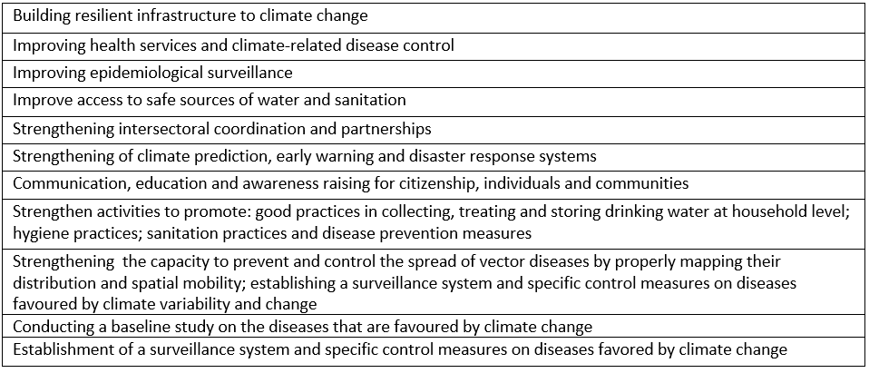
(Source: NAP Prototype, 25.09.2021, Climate Change Adaptation Assessment)
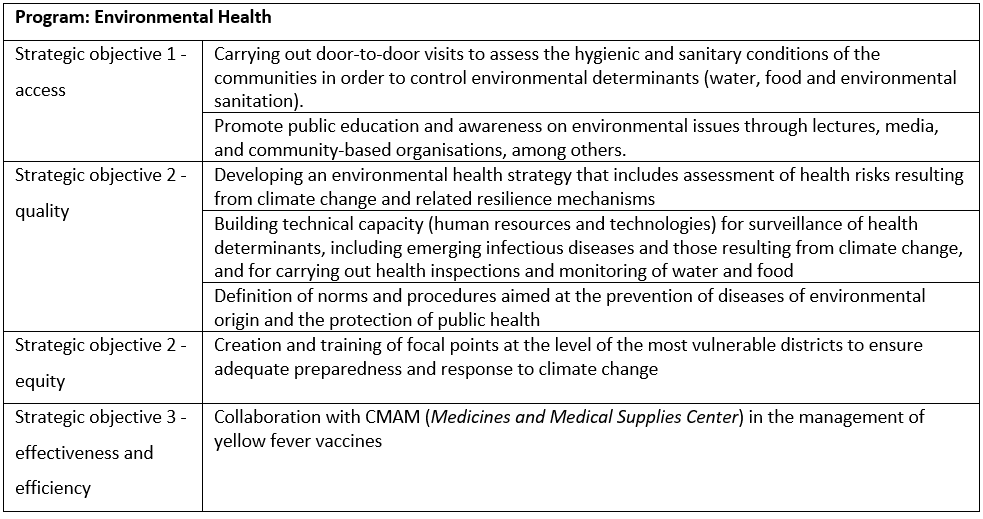
(Source: Strategic Plan for the Health Sector PESS 2014-2019, p. 66. Translated from Portuguese)
8.6 Energy
- Objectives:
- Expand climate resilient e-grid system to climate-proof agrarian ventures in 6 development corridors
- Increase energy efficiency
- Improve access to renewable energy
8.6.1 Context
The energy sector has experienced significant growth over the last two decades, both in terms of production and demand. Although consumption of modern energy sources has shown a remarkable evolution, particularly electricity and gas consumption, forest biomass continues to be the most important source of energy used in the country (ME, 2012). Indeed, it is estimated that about 77% of Mozambican families depend on biomass, mainly charcoal and firewood, to meet their energy needs (Mahumane & Mulder, 2016).
This reality is due to the fact that the majority of the population in rural areas (estimated at around 70%) resorts to the use of firewood to meet their cooking and water heating needs, while in urban areas, whose population numbers have been growing at a rapid pace, they use charcoal for cooking, despite the growing rise in the price of this form of energy, and the negative impacts associated with it. It should be noted that, according to the preliminary results of the latest census conducted by the National Statistics Institute, the urban population represents approximately 32% of the country’s total (INE, 2018).
Electricity
In terms of electricity production, it should be noted that Mozambique has a generation capacity much higher than its domestic consumption. The Cahora Bassa Hydroelectric Power Plant (HCB), with an installed capacity of 2,075 MW, is the main source of electricity generation in the country. Of the total capacity of HCB, 500 MW is dedicated to the country, consisting of 300 MW of firm energy and 200 MW of non-firm energy. The rest of the capacity, around 1,500 MW, is destined for export to South Africa. The total capacity for national consumption is 1,045 MW, which represents the sum of the capacity allocated by HCB (500 MW) and other generation plants , while the total capacity for export to neighboring countries is 1,860 MW, which is the sum of the HCB capacity for export and that of other emerging sources, natural gas (ALER, 2017). Regarding the electricity generation mix, 90% is from hydroelectric sources, with the remaining 10% coming mainly from natural gas. Figure 1.12, taken from the most recent strategy of the company Electricidade de Moçambique, illustrates the projection of the country’s supply and demand; according to the firm, paradoxically, it is expected that the country will face an energy deficit around the year 2020 and that, according to the Integrated Master Plan for energy production, after 2021 there will be a surplus of electricity production that could be traded at competitive prices in the regional market (EDM, 2018).
A recent study on the renewable energy potential in Mozambique (Renewable Energy Atlas, 2014) indicates that the country has a huge potential for energy production, with an estimated capacity of about 23,000 GW of solar resources, followed by hydroelectric sources with 19 GW, wind potential with 5 GW and biomass resources estimated at 2 GW. From this potential, the government has identified priority projects for the exploitation of these resources, locally, including the possibility of injecting the energy generated into the national grid. In this context, the priority projects identified comprise the production capacity of 5,645 MW for hydroelectric sources, 600 MW for solar, 1,146 MW for wind, 128 MW for biomass and 20 MW for geothermal energy. The Atlas also highlights the need for adequate financing schemes for the effective implementation of these projects. Access to renewable energy represents an important contribution, especially for the socio-economic development of communities that are far from the national electricity distribution grid, as well as in mitigating climate change through the sustainable use of biomass resources.
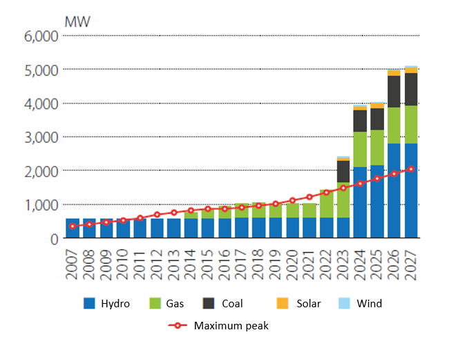
Despite the remarkable efforts that have been carried out by Electricidade de Moçambique, in the field of electrification of the country, with an average of about 120 thousand new connections made per year in the last 15 years, according to the recent statistics available, the current coverage is only 25.9% (EDM, 2015). In fact, this is the average rate of access to electricity, so it varies for each province, with the lowest rate in Cabo Delgado, Niassa and Zambézia provinces, with about 12% each and, the highest, in Maputo City, with a level of 92% (MIREME, 2018). The high level of dependence on biomass resources for energy purposes has serious implications on the health of the population and the environment. On the other hand, the current electrification rate represents a huge challenge for the achievement of the Sustainable Development Goals (SDGs), particularly the seventh goal, according to which “by 2030, universal, reliable, modern and affordable access to energy services should be ensured” (UN, 2015).
Oil and Gas
The consumption of liquid fuels grew at an average rate of 6% per year, and from 2009 reached a growth rate of 15% per year, on average. The transport sector is responsible for the largest portion of this increase, followed by the industrial sector. Consumption of petroleum products almost doubled in the period 2000 - 2011. Natural gas production in Mozambique has grown by an average of 5.3% per year since 2006. About 95% of the natural gas produced is exported to South Africa.
In the last decade, the energy sector has continued to grow significantly. With the increase in the exploration and consumption of natural gas in the country, new players have emerged, especially from the private sector, in the area of electricity generation, the independent power producers (IPP’s) that have been expanding the national production capacity that currently stands at 2,724 MW (EDM, 2018).
The approval of the Natural Gas Master Plan, by the Government, in 2014, aiming at the massification of the natural gas produced in the country, has boosted the increasing use of this resource, not only in the production of electricity, but also in the industrial sectors, services and road transport, although at still low levels. Natural gas also represents an opportunity to diversify the mix of energy forms used in Mozambique, making an important contribution to industrial and socio-economic development. In turn, the consumption of liquid fuels, diesel and gasoline has doubled, mainly due to the increase in the national car fleet which, with 287.951 vehicles in 2010, almost tripled in less than ten years to 782,757 vehicles in 2018 (INE, 2011 & 2018). It should be noted that part of these fuels is used in the extractive industry, which is an emerging sector with significant growth, and in electricity generation.
(Source: Second National Communication Draft, p. 20-22. Translated from Portuguese)
8.6.2 Vulnerability to Climate Change and Disasters
Mozambique has enormous energy resources that are still unexplored, including coal and natural gas, water potential, renewable resources such as solar, wind, water, geothermal, ocean and forest and agricultural biomass sources (ME, 2011). At the same time, the country is one of the countries with the lowest levels of energy consumption in Southern Africa, with around 80% of the country’s energy consumption based on biomass (firewood and charcoal) and around 17% of the population with access to electricity (ME, 2011).
Access to energy is a sine qua non condition in the fight against poverty, as it is a means that intervenes in all key sectors of development, whether water, health, food refrigeration, lighting, and domestic heating, transport, agriculture, industrial production or even modern means of communication (Sebastião, 2013). In order to realize one of the national development objectives, the President of the Republic launched in November 2018 the Programme “Energy for All by 2030.” This Programme aims to intensify access to electricity for more households and businesses nationally, as a contribution to Mozambique’s universal electrification by 2030, defined in the National Electrification Strategy (ENE), approved by the Council of Ministers on 16 October 2018. The Project will support the expansion of power access to peri-urban and rural areas across the country by leveraging and extending the existing national electricity grid and deploying mini-grids on the basis of solar generation in areas not covered by the national grid.
INGD’s rainy season balance reports show that the power sector has been affected by extreme events that occur in the country, particularly strong winds, tropical cyclones, floods and inundations (Table 3.13).
Table 3.13: Impacts of extreme events on the energy sector
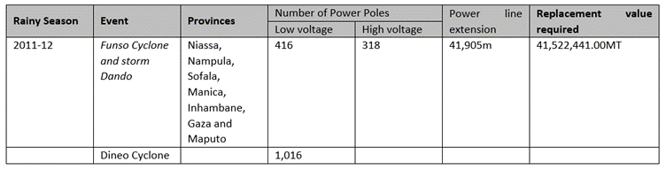
Extreme weather events have resulted in the destruction of privately and publicly owned solar panels. One of the examples is the destruction of 11 solar panels providing electricity to a health house in Mossuril district, Nampula province, during the passage of cyclone Jokwe in Mossuril district.
(Source: Second National Communication Draft, p. 185-186. Translated from Portuguese)
8.6.3 Actions
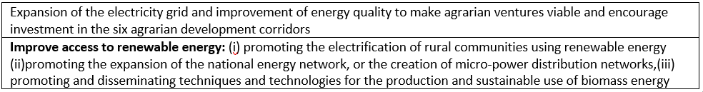
(Source: NAP Prototype, 25.09.2021, Climate Change Adaptation Assessment)
8.7 Infrastructure
- Objective: Sustainable landscape planning and management to ensure climate resilience
8.7.1 Context
The establishment of infrastructure in Mozambique is a process that has evolved throughout the country’s history. Soon after independence in 1975, the infrastructures that existed at that time underwent an evolution that accompanied the country’s socio-economic development.
In line with the National Development Strategy (2015-2035), the construction sector will be boosted by the construction of logistics infrastructure for large projects in the area of natural resources, infrastructure in the area of electricity, water and transport and projects of construction of houses for housing.
Next, the main existing infrastructures in Mozambique, their functionality, and the role they have played in the context of CC will be described.
Road Network (Roads and Railways)
In Mozambique, the road network is managed by the National Roads Administration (ANE) created by Decree 15/99 of 27 April 1999, as a public institution with legal personality and administrative and financial autonomy, under the supervision of the MOPHRH. In the structuring of ANE, the road network in Mozambique is classified as (i) primary (5,971 km); (ii) secondary (4,915 km); tertiary (12,603 km); and (iv) vicinal (6,567 km). Within this road network, the National Road No. 1 stands out. It runs longitudinally along the national territory in a north-south direction with a length of approximately 2,500 km. The road network in Mozambique provides overland connections to all cities and district headquarters of the country, in addition to other points of great importance.
From the perspective of transporting goods, the road network is supported and complemented by the rail and port system, which is managed by the Ports and Railways of Mozambique (CFM). The railway and port system has a network of approximately 2,983 km of railway line divided by a total of eight lines; three in the south zone, two in the central zone and three in the north zone. The rail network connects the three main ports in Mozambique (Port of Maputo, Port of Beira and Port of Nacala) to terminals located inland. Thus, the southern area of Mozambique has the Ressano Garcia Line, Goba Line, and Limpopo Line, which depart from the Port of Maputo to South Africa, Swaziland and Zimbabwe respectively. In the central area, the railway network includes the Machipanda line that links the port of Beira to Zimbabwe, and the Sena line that departs from Dondo to the city of Chipata in Zambia. In the northern zone, the railway network has the Nacala-Cuamba Line, which departs from the Port of Nacala to the City of Cuamba, and two lines that connect two cities; the Cuamba-Lichinga and Cuamba Entre-Lagos Line.
The 2018 PES prioritizes the development of socio-economic infrastructure, in this particular case by the rehabilitation of roads (the expectation is to rehabilitate 175km of national and regional roads, having been possible 137km equivalent to 78%; a plan of 95km of asphalting of National and Regional roads, having been possible 44km equivalent to 46%; regarding construction, rehabilitation and maintenance of bridges, the plan was to cover 15 of them, having been possible 18 bridges, equivalent to 120% for first Semester 2018). At the same time, the ports represent a cargo gateway to the country and to the Austral Region, considering the many large ships that dock there.
Port and Airport Network
Mozambique, being a coastal country has the privilege to have conditions for maritime navigation and therefore has a port network of great importance not only for the country but also for the Southern African region. The largest ports in Mozambique (Maputo Port, Beira Port and Nacala Port) are particularly connected to the railway network, which guarantees the handling and transport of heavy cargo to the hinterland countries. In addition to the rail link, the ports are connected to the road network which makes a good system for handling and loading cargo.
The Airports are also a gateway for passengers and cargo both from outside and inside the country. The country has an airport network consisting of eleven airports distributed throughout the country, and located in the cities of Maputo, Inhambane, Vilanculos, Beira, Chimoio, Quelimane, Nampula, Nacala, Tete, Pemba and Lichinga. Of these, Maputo International Airport, Vilanculos Aerodrome and Beira Airport receive international flights. Similarly to the Ports, the airports are connected to the road network which in turn guarantees the integrated transportation of people and goods at a national level.
Telecommunications and Electricity Infrastructures
The backbone of the telecommunications and electrical network in Mozambique is somewhat robust. The network was built since the 1980s, and followed the transformation story of the Mozambican telecommunications company, formerly known as Correios Telégrafos e Telefontes (CTT) (Posts, Telegraphs and Telephones) until 1981, when it became known as Empresa Nacional de Telecomunicações (National Telecommunications Company) - state-owned company, in 1992, became known as Telecomunicações de Moçambique (Mozambique Telecommunications), and in2019 it merged with Mozambican mobile telephony, renamed Mozambique Telecom (Tmcel). During the evolution of the telecommunications company, several infrastructures were built, with an emphasis on fiber optics, part of which crossing the underwater part and another on the continent that connects practically all the provinces of Mozambique, including the main cities. In addition to fiber optics, Tmcel currently has a network of towers across the country, and stations with different communication equipment. There is also a network of other mobile phone companies and radio and television stations that use specific equipment that is often exposed, or in places at risk from CC.
The electricity grid in Mozambique is managed by Electricidade de Moçambique EDM (Mozambique Electricity), which operates the public service of generation, transmission, distribution and sale of electricity throughout the country. For the exercise of its activities, EDM has a series of infrastructures, ranging from power generation stations, transmission lines, energy transformation substations, among other infrastructures spread throughout the country.
Education and Health Infrastructure
The Education System in Mozambique has a network of infrastructures dedicated to the teaching process. Of these infrastructures, the network of primary, secondary and pre-university schools spread across the country stands out. Higher education infrastructures are also dispersed throughout the country, but these are preferably distributed at the level of the main cities in the country and at the level of the district capitals.
According to the Final Report of the Inventory of Infrastructure, Equipment, Human Resources, and Health Services (SARA-2018), in 2017 the country had a total of 1,625 public health units, of which 96% provided primary health care in the 11 provinces of Mozambique and in 157 districts, being present in practically all districts of the country.
The GoM’s effort to guarantee the right to Education and Health for the entire Mozambican population brings challenges for building infrastructure and allocating Human Resources, particularly in the more remote areas of the country. The challenge also extends to the allocation of health equipment to health units, and to the equipment of classrooms with desks and teaching materials. Some of the school infrastructure is still made of precarious material that is very susceptible to the impact of bad weather. On the other hand, even though it is advisable to build these infrastructures in “safe” locations, there are scenarios throughout the country where this choice is minimal considering the need to make these services available close to the populations. However, the Government’s effort has always been to build infrastructures with high standards, capable of resisting the impact of bad weather. This effort has led to the use of some school infrastructures as shelter options to temporarily accommodate populations living in homes vulnerable to the impacts of extreme events.
Housing Infrastructure and others
The housing infrastructure in Mozambique is under the responsibility of the MOPHRH, which, through the Housing Promotion Fund (FFH), promotes access to decent housing, ensuring safety, durability, aesthetics, comfort and healthiness. The FFH has directed its efforts particularly towards young people and State Employees and Agents, in coordination with the different segments of society. Within the scope of its activities, from 2011 to 2018, the FFH has built nearly 4,000 houses and infrastructed nearly 13,000 plots in the different provinces of the country. This number of infrastructures is still far from satisfactory for the demand for housing in the country.
Despite the GoM’s effort to have a regular and well-planned subdivision, the growing pressure for housing demand, especially in urban areas, constitutes a major challenge for the issue of land use planning. With population growth, combined with the trend of migration from rural areas to the city, the demand for housing surpassed the capacity of municipalities to provide sufficient plots for this demand, and to control the quality of residential infrastructure to be built. Another problem associated with the quality of residential infrastructure is the cost of building conventional houses, which in many cases is higher than the population’s income. Thus, the main trend verified in the country was an increase in the use of land for the construction of residences and other infrastructure in peri-urban areas. For rural areas, populations prefer to settle in places close to district headquarters and administrative posts, water courses, roads and the coast, which also, in combination, contributes to a weak territorial ordering.
Informal settlements in the large cities of Mozambique bring environmental problems with them. Accelerated erosion and flooding are seen as the result of pressure on urban land use, which contributes to the increase of factors to be considered in the impacts caused by CC. Thus, over the last few years, more and more areas at risk of flooding and erosion have emerged in large cities. These locations are properly mapped and signposted to avoid setting up residences in these locations.
(Source: Second National Communication Draft, p. 190-195. Translated from Portuguese)
8.7.2 Vulnerability to Climate Change and Disasters
The infrastructure network at the country level is one of the main platforms for economic development. These include the road network, port, airport, hospital, school, communication platforms, electricity generation and transport, among others. Infrastructure in general is essential for a country to function and for everyday life. A particular relevance of the infrastructure sector is the fact that they significantly contribute to a country’s adaptive capacity in the context of CC impacts. In situations of extreme weather events, such as cyclones, most attention in Mozambique has been turned to infrastructure, considering that these constitute the means by which most rescue operations will take place. Thus, any interruptions in the infrastructure systems programmed for these operations imply a re-dimensioning of the strategy to rescue, or deliver food, medical and drug aid to the affected communities. In order to understand and minimize this effect, we highlight some initiatives taken by UN-Habitat and by the USAID Coastal Cities Adaptation Project (CCAP) in collaboration with district governments and municipalities, which carried out actions to develop house models resilient to weather events, and in raising awareness and training for the need to map critical infrastructure. The purpose of identifying and mapping these infrastructures is to identify, recognize and, if possible, predict their degree of resilience in the face of expected extreme events. The criticality of infrastructure lies in the fact that part of these are impacted by extreme events such as cyclones and floods, and negatively affect rescue activities.
The combination of road and rail network is preferred and practical for transporting goods. In the disaster risk reduction agenda, INGD and partners have used these routes for the transportation of material needed for prevention and mitigation. On the other hand, the GoM relies on these same infrastructures as means for rescue in the event of a disaster. With regard to the impacts of CC, the road infrastructure sector has almost always suffered heavy damage. Cyclically, several kilometers of roads are flooded and removed by the rainwater simultaneously with the soil. With the increase in river flows, several bridges and culverts have been damaged, resulting in the interruption of road traffic. Railroad infrastructures, although more resistant to the impacts of bad weather than roads, have also been affected, causing interruption in rail transport.
The port and airport network in Mozambique plays an important role in managing disaster risk caused by climate change, and appears as critical infrastructure in the same context. Throughout the history of climate events in the country, particularly in situations of intense rains and floods, airport positions have been activated as arrival points for humanitarian aid to the affected people as well as in search and rescue actions, taking into account that some roadways have been limited to transitability, including for providing access to disaster-affected places.
Communication and electricity infrastructures are part of the list of critical infrastructures in the context of CC, taking into account that these are essential for rescue and salvage operations. The criticality of this type of infrastructure calls for the need to redouble efforts by the GoM to ensure that they are increasingly resilient to bad weather. Over the past few years, communication and electricity infrastructures have been affected by extreme events, especially cyclones, in which strong winds have cyclically destroyed the equipment. As mentioned above, the destruction of equipment brings losses not only because of the damage, but also because their destruction negatively affects the operation of essential activities in the context of rescue and humanitarian assistance to victims.
As with other sectors, the school and hospital infrastructure sector is very susceptible to extreme events such as cyclones, heavy rains and floods.
Recent projections indicate that due to the impact of climate change, there will be an increase in the frequency, intensity and magnitude of disasters, and if there is no investment in resilience, annual losses could reach 450 million dollars by 2040, due to damage to agriculture, infrastructure and energy production.
The infrastructure sector is one of the most impacted by Climate Change, particularly in extreme events such as cyclones and floods. In each rainy season, there is always a negative balance in the different types of infrastructure in Mozambique. Thus, during the period under review, several infrastructures were destroyed by these events. In 2007, when Cyclone Favio passed through the Coastal Districts of the Province of Inhambane, around 80% of the infrastructure in the District of Vilankulo was damaged, including residences and tourist establishments. The destruction caused by this cyclone spread to other districts, damaging around 130,000 homes and around 130 schools. In 2008, Cyclone Jokwe affected Nampula Province, destroying 9,316 houses and damaging around 3,220 houses. Cyclone Funso affected the country with strong winds, affecting more the provinces of Zambézia, which had a record of 12 deaths, seven of which occurred in the district of Maganja da Costa, where 1,610 houses were destroyed and one death occurred in the capital city of Quelimane, with heavy rains that flooded most of the neighborhoods due to poor drainage systems. In the city, floods destroyed 4 houses and several other towns along the coast suffered flooding. In Nicoadala district, the storm destroyed 66 homes.
(Source: Second National Communication Draft, p. 190-196. Translated from Portuguese)
8.7.3 Actions
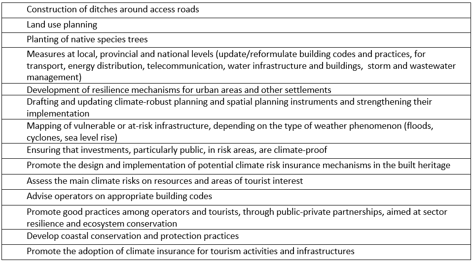
(Source: NAP Prototype, 25.09.2021, Climate Change Adaptation Assessment)
8.11 Social Protection